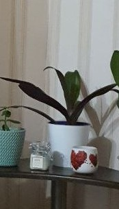
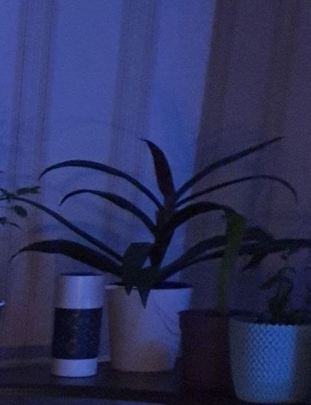
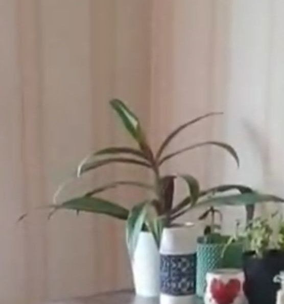
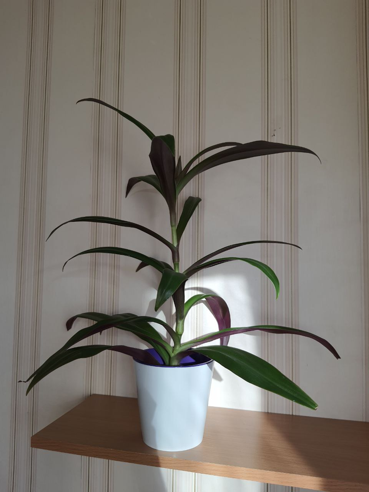

Рео
History
Колись тут буде текст. Але не сьогодні =)
Information
Згодом...

Влітку взяла у мами росток буквально з двох маленьких листочків. Але в мене йому видно сподобалось, почав гарно рости. (13.10.21)

14.02.22

В перші місяці війни він залишився без поливу. Але це не заважало йому рости. Тягнувся до сонечка (13.04.22)

Видно як виріс - любить багато сонечка та воду (24.06.22)